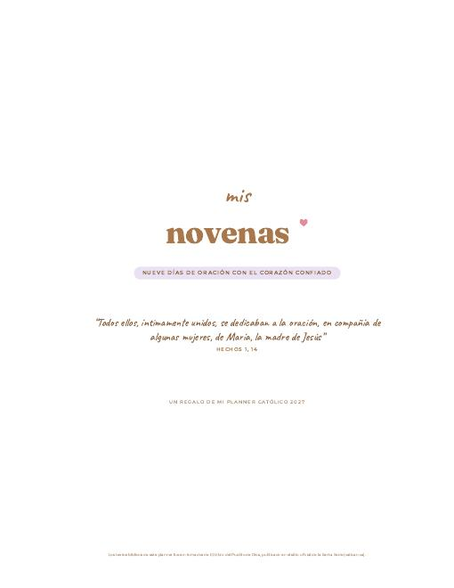
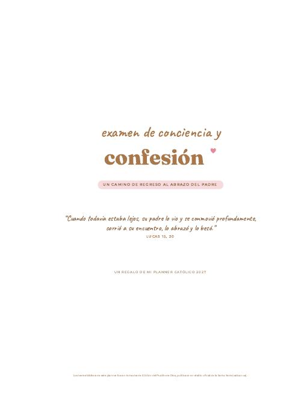
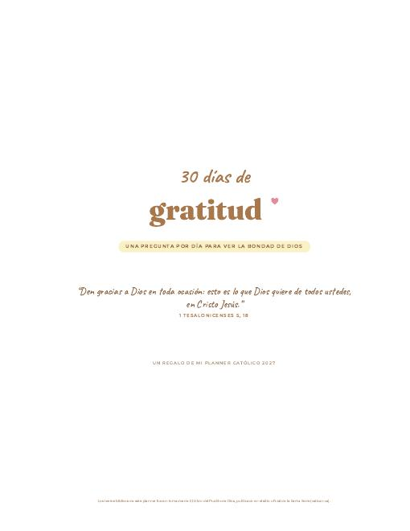

♡
Tus regalos
con Mi Planner Católico 2027
Toca el tamaño que usas para descargar el PDF.


Examen de conciencia y confesión
Una guía delicada para preparar tu corazón para la confesión

🔒 Solo para uso personal. No está permitido compartir ni revender los archivos.